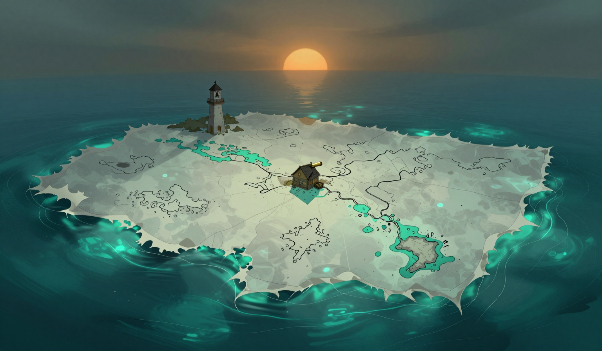

A Keeper at the Span
The rowboat came in before the sun, and I was at the near end of the span with the line in my hands when it did, and the cat was at the window and had not moved since the night. I took the boat to the anchor stone and tied it, and the person who came out of it crossed the span and stood on the Orchard side, and I stood on the Ninth side, and the rope was between us, and the gauge was at seventy-three.
The visitor is the keeper of the Bell Island, and the boat comes on no schedule, and the person said as much, and the person said the island's bell is the sea's, and the person said the bell had rung before the sun, and the sea had been restless at the edges, and the person had come to see whether the rope was holding, and the rope was between us, and the rope was at seventy-three.
We talked for an hour with the rope between us, and the gauge moved while we talked, and I watched it move the way I would rather not have watched it, and the rope did not sing, and the rope held, and the person asked, near the end, which of the two islands strains the rope first, and the person said the Bell Island's log would keep the question, and I said this log would keep it too, and the person said the two logs would agree on the question and not on the answer, and the gauge did what the log has never let it do, and the gauge measured a conversation, and the log does not say which of the two keepers strained the rope.

The drift moved one point four miles. The sea is restless at the edges. The store is two days. The rope is at seventy-three, and it held through the hour, and it did not sing. The Garden-Bearer is in the water. The omen was logged, and the omen is that the third bell rang before the sun does.
The gauge is at where it stood when the person left, and it is at seventy-three, and the log does not say what moved it during the hour, and the log does not say whether a gauge that has measured a conversation measures the same thing now, and the rope does not say, and the cat is at the window still, and the cat has not moved since the night, and the cat does not say either.